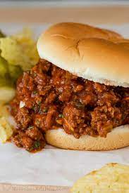

Sloppy Joe Recipe

Description
The sloppy joe is a good alternative to the burger. It has onion mustard and goes will with brioch bread. only problem is it has multiple steps so it takes about an hour to get ready.
Ingredients
- 1 lb ground beef
- half an onion
- tablespoon mustard
- ketchup
- green bell pepper
Steps
- Prepare the ingredients by cutting the onions and green bell pepper and pulling the quantities of the other ingredients needed.
- Brown the ground beef, cook with onions.
- Add green bell pepper, ketchup, salt and pepper and a cup of water
- let water evaporate, add the rest of the ingredients and add a cup of water and simmer for 30 minutes.
return